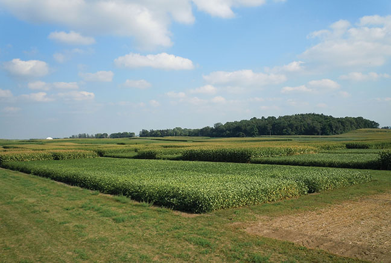
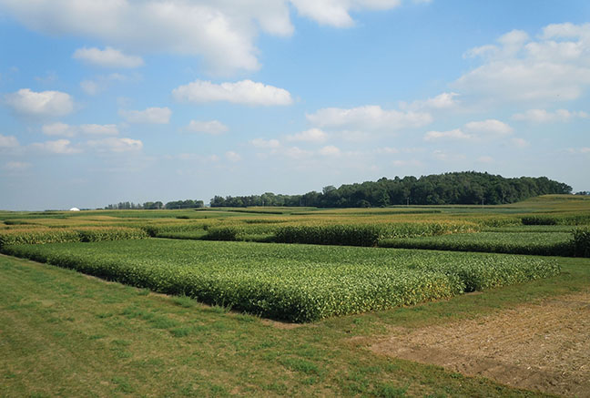

Find us on Twitter
Find us on Twitter


 



Farmers and Scientists Discuss Creating Climate Resilient Agriculture in the Corn BeltWhat can be done to help farmers address risks associated with highly variable and unpredictable weather and long term changing climate conditions? How can the sustainability and resilience of corn-based cropping systems be increased? These questions and more were discussed in Ames, Iowa this week, at a conference for Corn Belt farmers, crop advisors and scientists with the Sustainable Corn Project. More... |
More about the Sustainable Corn Project...

Project Partners
- Iowa State University
- Lincoln University
- Michigan State University
- The Ohio State University
- Purdue University
- South Dakota State University
- University of Illinois
- University of Minnesota
- University of Missouri
- University of Wisconsin
- USDA Agricultural Research Service, Columbus, Ohio
- USDA National Institute of Food and Agriculture (USDA-NIFA)